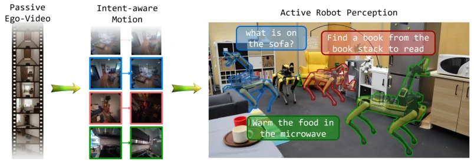
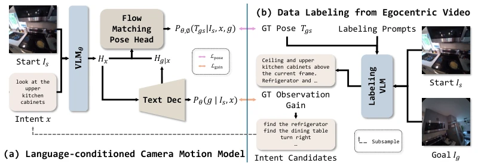
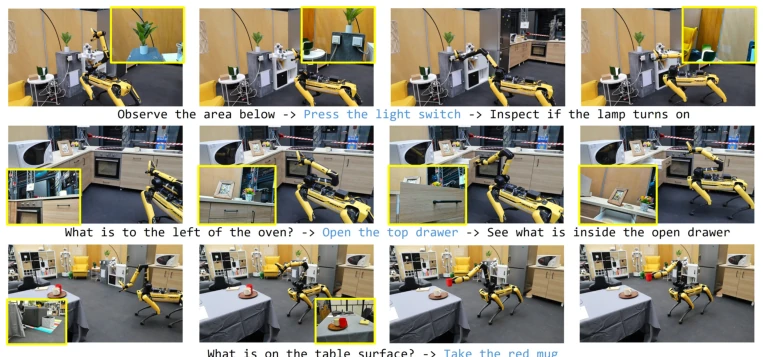
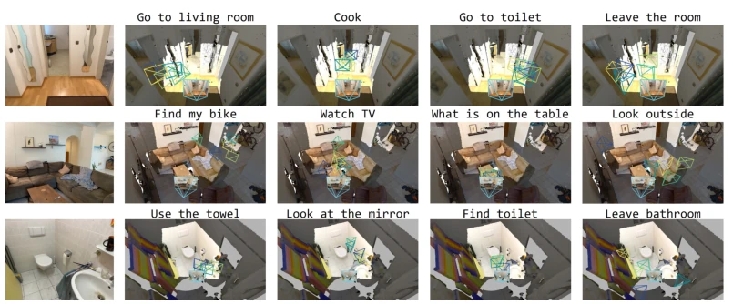
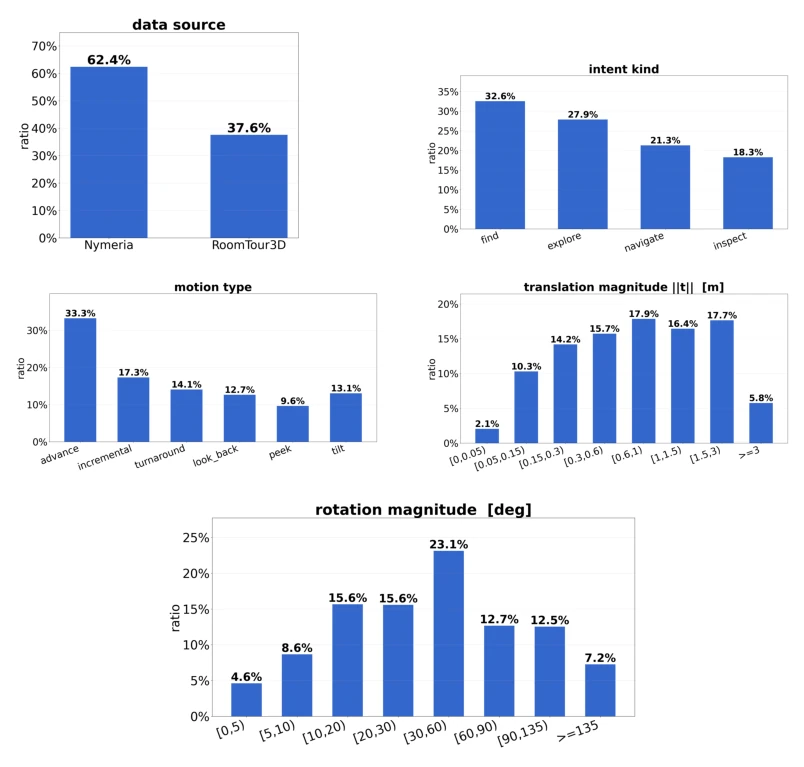
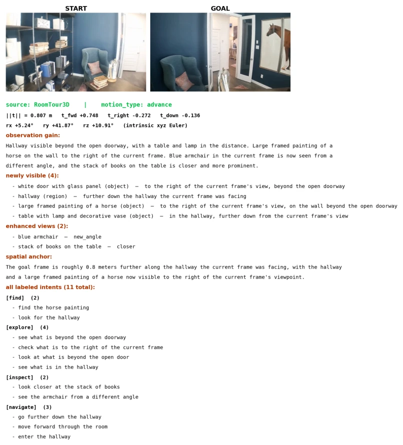
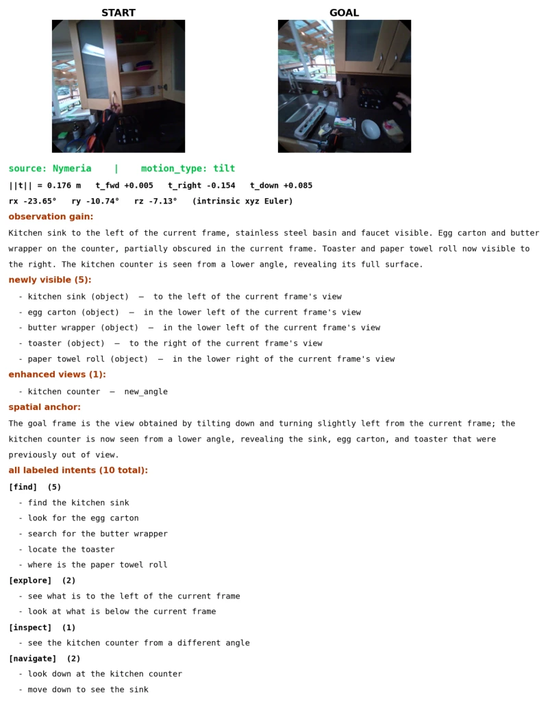
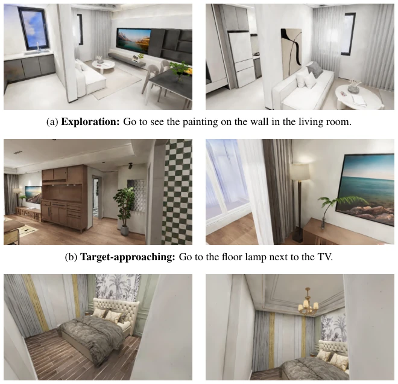
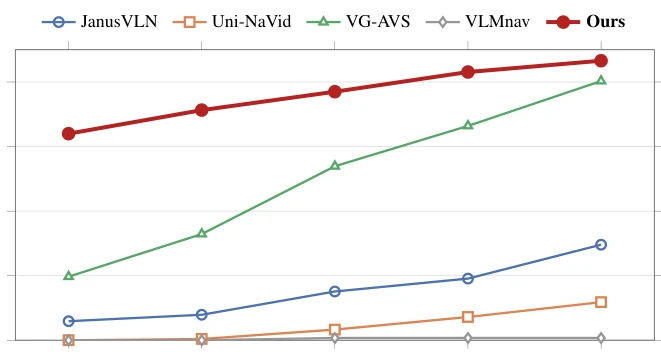
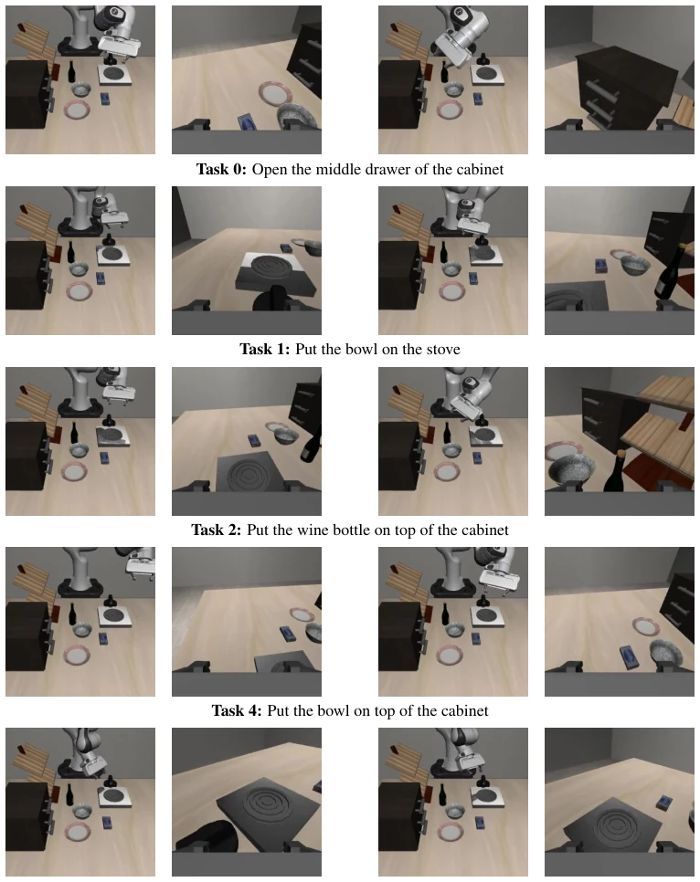

This paper turns the act of "seeing" from passive input into an active action, which is quite interesting. LIME attempts to make robots act like humans, thinking first (language) then looking (camera) upon hearing instructions, rather than acting directly. Using human videos as teachers saves teleoperation, which is a smart move. But the problem lies in that human perspectives and robot perspectives may not be the same; will direct migration lead to domain mismatch? Although they tested it on Spot, it is after all just LoRA fine-tuning and relies on Aria glasses data. Additionally, is the description of "observation gain" a bit of overpromising? Can the model really accurately predict "what can be seen next"? Anyway, it is better than those navigation models that only walk straight ahead; at least it knows to avoid obstacles to see details. However, the benchmarks are all synthetic environments; generalization ability in the real world remains questionable.
Existing embodied AI models mostly treat vision as input and action as output, ignoring the key step of "moving the camera to see clearly". Traditional active perception [2] mostly optimizes specific task metrics, lacking the drive of free language intent. VLN [8] focuses on path planning, VLA [10] focuses on manipulation; camera motion is often coupled in base movement or robotic arm control, lacking an independent "intent-aware camera motion" interface. This leads to robots, upon hearing "look at that blocked thing", often just naively colliding with it instead of adjusting the viewpoint. This paper aims to fill this gap, treating camera motion as a first-class citizen, solving viewpoint generation under language conditions. Existing benchmarks mostly focus on goal arrival rather than viewpoint adjustment, making it difficult to evaluate fine-grained perception capabilities.

Figure 1: LIME learns intent-aware camera motion from passive human video and transfers it to robots: given the current view and a natural-language intent, it generates relative target camera poses that acquire intent-relevant visual evidence.
The overall process is divided into three steps: first, mining supervision signals from passive egocentric videos (RoomTour3D, Nymeria), using VLM to generate intent and observation gain descriptions, pairing relative camera poses. Second, the model architecture adopts a VLM backbone (Qwen3-VL-4B), predicting observation gain text via an autoregressive decoder, then using it as conditional input to a continuous flow-matching pose head. The pose head parameterizes target transformation as 3D translation and 6D rotation, adopting x-prediction parameterization rather than directly regressing velocity fields, ensuring geometric constraints. The core innovation lies in decoupling yet jointly training the language description of "visual evidence acquisition" with geometric pose prediction, retaining VLM's semantic understanding while ensuring geometric continuity of poses. Flow-matching allows the model to output multi-modal pose hypotheses, coping with multiple feasible viewpoints under the same intent. During training, the visual encoder is frozen, only updating the projection layer and pose head; during inference, gain token hidden states are cached to accelerate.

Figure 2: LIME pipeline. Panel (a) shows the VLM-based camera-motion generator with an au- toregressive language interface and a continuous flow-matching pose head (Sec. 3.2). Panel (b) shows how we mine passive egocentric video into intent-conditioned camera-motion supervision with observation-gain descriptions (Sec. 3.3).

Figure 5: Real-robot experiments. The learned camera-motion policy moves the robot camera to acquire visual evidence for chained perception and interaction intents. Blue text indicates action commands passed to a separate manipulation policy.
In the benchmark constructed on InteriorGS, covering three intent types: goal approach, exploration, and view switching. Compared baselines such as JanusVLN, Uni-NaVid, VG-AVS. Metrics include Success Rate (SR) and Collision Avoidance Success Rate (CA-SR). LIME achieved the highest scores in all categories, especially with obvious advantages in exploration tasks. Ablation experiments show that observation gain descriptions have an auxiliary role in pose prediction. Real robot experiments (Boston Dynamics Spot) validated transferability; with VidBot manipulation strategy, it can adjust viewpoint first then execute grasping. However, the benchmark is based on synthetic rendering; generalization in real scenes still needs more verification. Human-annotated subsets validated the reliability of automatic evaluation.

Figure 4: Qualitative samples on ScanNet++ indoor scenes. Each row fixes the same current obser- vation and varies the language intent; colored camera frustums show five sampled target poses from the flow-matching head, illustrating intent-conditioned motion and multimodal pose hypotheses.

Figure 6: Dataset distributions after balanced subsampling. We balance the start-goal image pairs across data source, intent kind, motion type, translation magnitude, and rotation magnitude before expanding them into intent-conditioned training examples.
其他图片Other Figures

Figure 7: Example of a start–goal pair label from RoomTour3D, showing the paired frames, motion metadata, observation-gain description, structured visual-change fields, and generated intent set.

Figure 8: Example of a start–goal pair label from Nymeria, showing the paired frames, motion metadata, observation-gain description, structured visual-change fields, and generated intent set.

Figure 9: Representative benchmark examples from the three intent families. In each row, the left image is the start view and the right image is the held-out goal reference view.

Figure 10: Target stage-1 proximity SR under increasingly relaxed adaptive distance thresholds. Each x-axis tick denotes the small-object / large-object threshold pair in meters, assigned to the 10th and 90th percentiles of target AABB max-side size, with intermediate thresholds linearly interpo- lated. Curves report mean SR over three runs under the shared motion budget.

Figure 12: Qualitative LIBERO-Goal examples from sampled initial states. Columns are grouped by the sampled start view and the post-LIME view; each group shows the external and wrist cameras. The post-LIME views are captured before executing the downstream π0.5 manipulation policy.